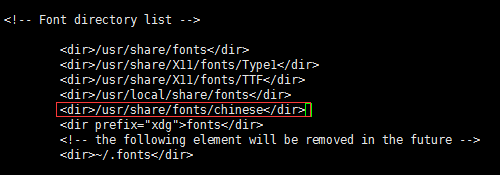
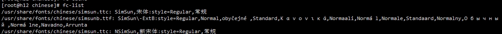

activitii 图形显示中文为方框，需要在系统中添加中文字体，添加步骤:
1、用fontconfig来安装字体库
yum -y install fontconfig
2、创建 /usr/share/fonts/chinese目录
3、复制window中的字体到上面创建的目录
c:\windows\fonts\simsun.ttc
4、修改chinese目录的权限
5、修改字体配置文件
vi /etc/fonts/fonts.conf

6、刷新内存中的字体缓存，这样就不用reboot重启了
fc-cache
7、通过fc-list看一下字体列表
